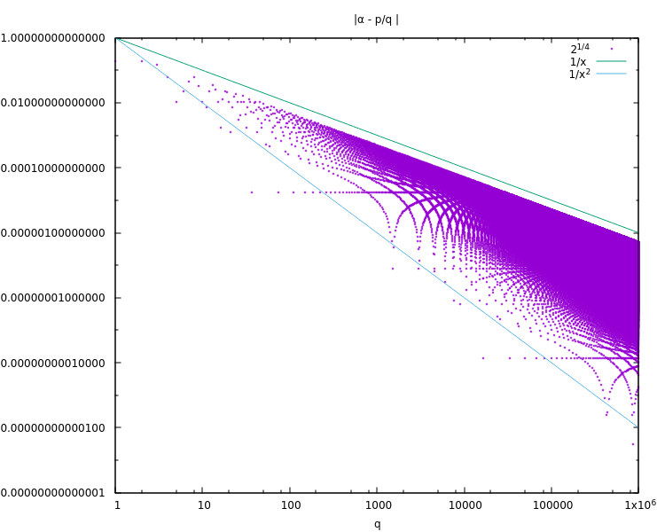

Dev Blog
| ./dev |
|
Original theme by orderedlist (CC-BY-SA)
Where applicable, all content is licensed under a CC-BY-SA.
|

Diophantine Approximation
Dirichlet's Approximation Theorem
$$ \begin{array}{c} \forall \alpha \in \mathbb{R}, \forall n \in \mathbb{Z}_{+} \\ \exists p, q \in \mathbb{Z}_{+}, \ \ 1 \le q \le n \\ \to 0 < | q \alpha - p | < \frac{1}{n} \\ \end{array} $$
Consider
$$ \begin{array}{c} r_q = q \alpha - \lfloor q \alpha \rfloor \\ r_q \in [0,1) \\ \end{array} $$
Allow for $r_0 = 0$ and there are $(n+1)$ points for $(0 \le q \le n)$, $r_q$, in the unit interval. By pigeonhole, there must be two that fall in some interval $[\frac{s}{n}, \frac{s+1}{n})$ for $0 \le s < n$.
Call the two points $r_m$ and $r_l$, $\ m > l$.
$$ \begin{array}{cl} & |r_m - r_l| < \frac{1}{n} \\ \to & | \{ m \alpha \} - \{ l \alpha \} | < \frac{1}{n} \\ \to & | (m \alpha - \lfloor m \alpha \rfloor) - (l \alpha - \lfloor l \alpha \rfloor) | < \frac{1}{n} \\ \to & | (m - l) \alpha - (\lfloor m \alpha \rfloor - \lfloor l \alpha \rfloor ) | < \frac{1}{n} \\ \end{array} $$
$$ \begin{array}{cl} & q' = m - l \in \mathbb{Z} \\ & p' = (\lfloor m \alpha \rfloor - \lfloor l \alpha \rfloor ) \in \mathbb{Z} \\ \to & | q' \alpha - p' | < \frac{1}{n} \end{array} $$
So long as $\alpha$ is irrational:
$$ \begin{array}{cl} & | \alpha - \frac{p}{q} | < \frac{1}{q n} < \frac{1}{n} \\ \to & | \alpha - \frac{p}{q} | > \frac{1}{C} \end{array} $$
For some constant, $C$.
We can now pick an $n'$ s.t.:
$$ \begin{array}{cl} & \frac{1}{n'} < \frac{1}{C} \\ \to & | \alpha - \frac{p'}{q'} | < \frac{1}{C} \to & q' \ne q \end{array} $$
So there are infinitely many pairs, ${p,q}$ s.t. $ | q \alpha - p | < \frac{1}{n} $.
Rearranging,
$$ \begin{array}{cl} & | \alpha - \frac{p}{q} | < \frac{1}{q n} < \frac{1}{q^2} \\ \to & | \alpha - \frac{p}{q} | < \frac{1}{q^2} \end{array} $$
Note that this only says "there exists" a $q$ and is not a relation for all $q$.
$$ \begin{array}{cl} & \forall \alpha \in \mathbb{R}, \forall n_0 \in \mathbb{Z}_{+} \\ & \exists p,q \in \mathbb{Z}_{+}, \ \ q > n_0 \\ \to & | \alpha - \frac{p}{q} | < \frac{1}{q^2} \end{array} $$
Here is an example for $2^{\frac{1}{4}}$:
#!/usr/bin/python3
import gmpy2
with gmpy2.local_context(gmpy2.coneext(), precision=1000) as ctx:
x = gmpy2.sqrt(gmpy2.sqrt(2))
N = 1000000
for q in range(1,N):
pf = gmpy2.floor(q*x)
pc = gmpy2.ceil(q*x)
r = q*x - pf
rp = pc - q*x
if (r<rp):
y = x - (pf/gmpy2.mpfr(q))
print(q,y)
else:
y = (pc/gmpy2.mpfr(q)) - x
print(q,y)

Liouville Bounds
For $\alpha$ the root of a polynomial of degree $n$:
$$ \begin{array}{cc} \forall p(x) = \sum_{k=0}^{n} c_k x^k, & c_k \in \mathbb{Z}, \ \ p(\alpha) = 0 \\ \exists A > 0, & \forall p,q \in \mathbb{Z}_{+} \\ | \alpha - \frac{p}{a}| > \frac{A}{q^n} \end{array} $$
$\alpha_k$ the roots of $p(x)$ above, with $\alpha$ distinct from the rest, and $M$ is the maximum value of $|p'(x)|$ on the interval $[\alpha-1,\alpha+1]$:
$$ A < \text{min} \left( 1, \frac{1}{M}, | \alpha - \alpha_1|, | \alpha - \alpha_2|, \cdots, |\alpha - \alpha_{n-1}| \right) $$
Assume, for contradiction, some $p,q$, with $p(\frac{p}{q}) \ne 0 $ s.t.:
$$ | \alpha - \frac{p}{a} | \le \frac{A}{q^n} \le A < \text{min} \left( 1, \frac{1}{M}, | \alpha - \alpha_1|, | \alpha - \alpha_2|, \cdots, |\alpha - \alpha_{n-1}| \right) $$
My the mean value theorem:
$$ \begin{array}{cc} & p(\alpha) - p(\frac{p}{q}) = (\alpha - \frac{p}{q}) \cdot p'(x_0) \\ \to & | \alpha - \frac{p}{q}| = \frac{ |p(\alpha) - p(\frac{p}{q}) }{ | p'(x_0) | } \\ \to & | \alpha - \frac{p}{q}| = | \frac{p(\frac{p}{q})}{ p'(x_0) } | \\ \to & | \alpha - \frac{p}{q}| = | \frac{ \sum_{k=0}^{n} c_k p^k q^{-k} }{ p'(x_0) } | \\ \to & | \alpha - \frac{p}{q}| = \frac{1}{q^n} | \frac{ \sum_{k=0}^{n} c_k p^k q^{n-k} }{ p'(x_0) } | \ge \frac{ \frac{1}{q^n} }{ p'(x_0) } \\ \to & | \alpha - \frac{p}{q}| \ge \frac{ \frac{1}{q^n} }{ p'(x_0) } \ge \frac{ \frac{1}{q^n} }{ M } > \frac{A}{q^n} \ge | \alpha - \frac{p}{q} | \\ \to & | \alpha - \frac{p}{q}| > | \alpha - \frac{p}{q} | \\ \end{array} $$
A contradiction, so the inequality holds.